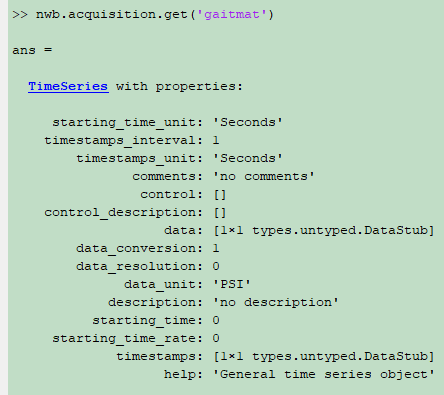

Gait Mat System¶
Can only be used in Windows because of the provided Data Reader SDK.
The codes are for Matlab 2011 and higher with Matlab 64-bit.
Please make sure the Data Reader SDK is installed in C:\Tekscan
Files are required for storing gait mat data into NWB Structure¶
Files/Folder |
Description |
*.fsx |
the file containing pressure data |
folder |
the folder containing the map file (.mp) |
*.cal |
the calibration file |
*.equ |
the equilibration file |
NWB Structure Storing Motion Analysis Data¶
Gait mat data are stored as a TimeSeries structure under the key ‘gaitmat’ in the structure of nwb.acquisition.
